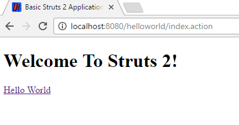

Hello World Using Struts 2
Description
When you click on a hyperlink or submit an HTML form in a Struts 2 web application, the input is not sent to another server page, but to a Java class that you provide. These classes are called Actions. After the Action fires, a Result selects a resource to render the response. The resource is generally a server page, but it can also be a PDF file, an Excel spreadsheet, or a Java applet window.
Suppose you want to create a simple “Hello World” example that displays a welcome message. After setting up an empty basic Struts 2 web application (see How To Create A Struts 2 Web Application), to create a “Hello World” example, you need to do four things:
- Create a class to store the welcome message (the model)
- Create a server page to present the message (the view)
- Create an Action class to control the interaction between the user, the model, and the view (the controller)
- Create a mapping (
struts.xml) to couple the Action class and view
By creating these components, we are separating the work flow into three well-known concerns: the View, the Model, and the Controller. Separating concerns makes it easier to manage applications as they become more complex.
Let’s look at an example model class, Action, server page, and mapping. If you like, fire up your Java IDE, and enter the code as we go.
This tutorial assumes you’ve completed the How To Create A Struts 2 Web Application tutorial and have a working basic Struts project. The example code for this tutorial, helloworld, is available for checkout from the Struts 2 GitHub repository at struts-examples. The example projects use Maven to manage the artifact dependencies and to build the .war files.
The Code
Let’s modify the basic-struts project to add the following:
- a model class to store our message
- a view that displays our message
- an Action class to act as the controller
- a configuration that ties everything together
The Struts 2 user mailing list is an excellent place to get help. If you are having a problem getting this application to work search the Struts 2 mailing list. If you don’t find an answer to your problem, post a question on the mailing list.
Step 1 - Create The Model Class MessageStore.java
Create the MessageStore class in src/main/java. Be sure to note the package statement below.
Note that in the code shown below the JavaDoc comments are omitted. In the download example, JavaDoc comments are included.
MessageStore.java
package org.apache.struts.helloworld.model;
public class MessageStore {
private String message;
public MessageStore() {
message = "Hello Struts User";
}
public String getMessage() {
return message;
}
}
Note the use of the public getter method to allow access to the private message String attribute. The Struts 2 framework
requires that objects you want to expose to the view (HelloWorld.jsp) follow the JavaBean-style conventions.
Step 2 - Create The Action Class HelloWorldAction.java
We need an Action class to act as the Controller. The Action class responds to a user action (in this example that action
will be clicking an HTML hyperlink and sending a specific URL to the Servlet container). One or more of the Action class’s
methods are executed and a String result is returned. Based on the value of the result, a specific view page (in this
example that view page is HelloWorld.jsp) is rendered.
Note the package and import statements below.
HelloWorldAction.java
package org.apache.struts.helloworld.action;
import org.apache.struts.helloworld.model.MessageStore;
import com.opensymphony.xwork2.ActionSupport;
public class HelloWorldAction extends ActionSupport {
private MessageStore messageStore;
public String execute() {
messageStore = new MessageStore() ;
return SUCCESS;
}
public MessageStore getMessageStore() {
return messageStore;
}
}
The Struts 2 framework will create an object of the HelloWorldAction class and call the execute method in response to
a user’s action (clicking on a hyperlink that sends a specific URL to the Servlet container).
In this example, the execute method creates an object of class MessageStore and then returns the String constant SUCCESS.
Note also the public getter method for the private MessageStore object. Since we want to make the MessageStore object
available to the view page, HelloWorld.jsp, we need to follow the JavaBean-style
of providing getter and setter methods where needed.
Step 3 - Create The View HelloWorld.jsp
We need a server page to present the message that is stored in the model class MessageStore. Create the below JSP in
the src/main/webapp folder.
HelloWorld.jsp
<!DOCTYPE html>
<%@ page language="java" contentType="text/html; charset=UTF-8" pageEncoding="UTF-8" %>
<%@ taglib prefix="s" uri="/struts-tags" %>
<html>
<head>
<meta http-equiv="Content-Type" content="text/html; charset=UTF-8">
<title>Hello World!</title>
</head>
<body>
<h2><s:property value="messageStore.message" /></h2>
</body>
</html>
The taglib directive tells the Servlet container that this page will be using the Struts 2 tags and that these tags will
be preceded by an s.
The <s:property> tag displays the value returned by calling the method getMessageStore of the HelloWorldAction
controller class. That method returns a MessageStore object. By adding the .message onto the messageStore part of
the value attribute we are telling the Struts 2 framework to call the getMessage method of that MessageStore object.
The getMessage method of class MessageStore returns a String. It is that String that will be displayed by the <s:property> tag.
We’ll learn more about tags in the next tutorial. See the Struts Tags for more information about tags.
Step 4 - Add The Struts Configuration In struts.xml
We need a mapping to tie the URL, the HelloWorldAction class (controller), and the HelloWorld.jsp (the view) together.
The mapping tells the Struts 2 framework which class will respond to the user’s action (the URL), which method of that
class will be executed, and what view to render based on the String result that method returns.
Edit the struts.xml file (in the Mvn project that file is in the src/main/resources folder) to add the action mapping.
Place the action node (action name="hello") between the opening and closing package node, just after the action mapping
with the name="index". Your complete struts.xml should look like:
struts.xml
<?xml version="1.0" encoding="UTF-8"?>
<!DOCTYPE struts PUBLIC
"-//Apache Software Foundation//DTD Struts Configuration 2.5//EN"
"http://struts.apache.org/dtds/struts-2.5.dtd">
<struts>
<constant name="struts.devMode" value="true" />
<package name="basicstruts2" extends="struts-default">
<action name="index">
<result>/index.jsp</result>
</action>
<action name="hello" class="org.apache.struts.helloworld.action.HelloWorldAction" method="execute">
<result name="success">/HelloWorld.jsp</result>
</action>
</package>
</struts>
Step 5 - Create The URL Action
Let’s add an Action URL inside index.jsp (see src/main/webapp folder) so the user can click on a link to tell the Struts 2
framework to run the execute method of the HelloWorldAction class and render the HelloWorld.jsp view.
First add the taglib directive at the top of the jsp <%@ taglib prefix="s" uri="/struts-tags" %>. Next add this p tag
<p><a href="<s:url action='hello'/>">Hello World</a></p> after the h1 tag. Your new index.jsp should look like:
index.jsp
<!DOCTYPE html>
<%@ page language="java" contentType="text/html; charset=UTF-8" pageEncoding="UTF-8" %>
<%@ taglib prefix="s" uri="/struts-tags" %>
<html>
<head>
<meta http-equiv="Content-Type" content="text/html; charset=UTF-8">
<title>Basic Struts 2 Application - Welcome</title>
</head>
<body>
<h1>Welcome To Struts 2!</h1>
<p><a href="<s:url action='hello'/>">Hello World</a></p>
</body>
</html>
The Struts url tag creates the URL with an action of hello. The hello action was mapped to the HelloWorldAction class
and its execute method. When the user clicks on the above URL it will cause the Struts 2 framework to run the execute
method of the HelloWorldAction class. After that method returns the String success (constant SUCCESS), the view
page HelloWorld.jsp will be rendered.
Step 6 - Build the WAR File and Run The Application
Execute mvn jetty:run to run the application.
Go to this URL http://localhost:8080/helloworld/index.action where you should see the following:

Click on the Hello World link and you should get the HelloWorld.jsp page:

How the Code Works
Your browser sends to the web server a request for the URL http://localhost:8080/helloworld/hello.action.
- The container receives from the web server a request for the resource
hello.action. According to the settings loaded from the web.xml, the container finds that all requests are being routed toorg.apache.struts2.dispatcher.filter.StrutsPrepareAndExecuteFilter, including the*.actionrequests. TheStrutsPrepareAndExecuteFilteris the entry point into the framework. - The framework looks for an action mapping named “hello”, and it finds that this mapping corresponds to the class
HelloWorldAction. The framework instantiates the Action and calls the Action’sexecutemethod. - The
executemethod creates the MessageStore object and returnsSUCCESS(="success"). The framework checks the action mapping to see what page to load ifSUCCESSis returned. The framework tells the container to render as the response to the request, the resourceHelloWorld.jsp. - As the page
HelloWorld.jspis being processed, the<s:property value="messageStore.message" />tag calls the gettergetMessageStoreof theHelloWorldAction and then calls thegetMessageof the MessageStore object returned bygetMessageStore. The tag merges the value of the message attribute into the response. - A pure HTML response is sent back to the browser.
What to Remember
The framework uses Actions to process HTML forms and other requests. The Action class returns a result-name such
as SUCCESS, ERROR or INPUT. Based on the mappings loaded from the struts.xml, a given result-name may select
a page (as in this example), another action, or some other web resource (image, PDF).
When a server page is rendered, most often it will include dynamic data provided by the Action. To make it easy to display dynamic data, the framework provides a set of tags that can be used along with HTML markup to create a server page.
| Return to How to create a Struts 2 web application | or | onward to Using Struts 2 Tags |